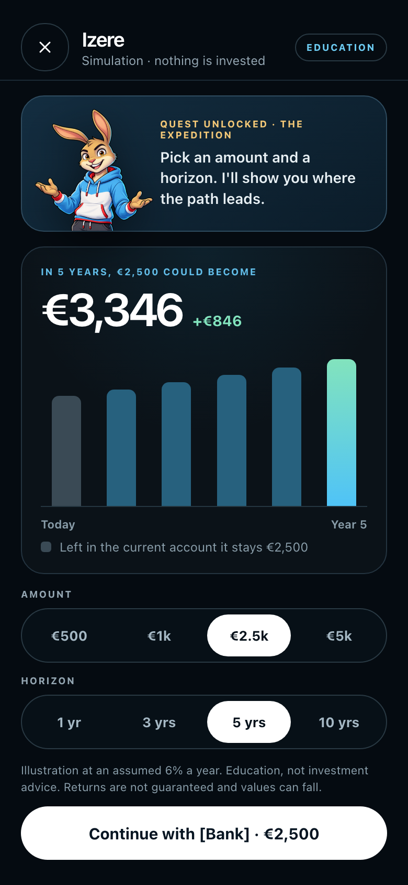
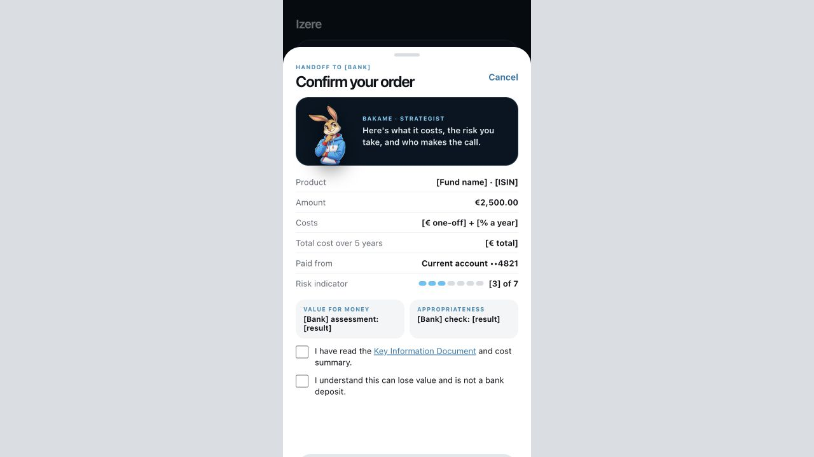
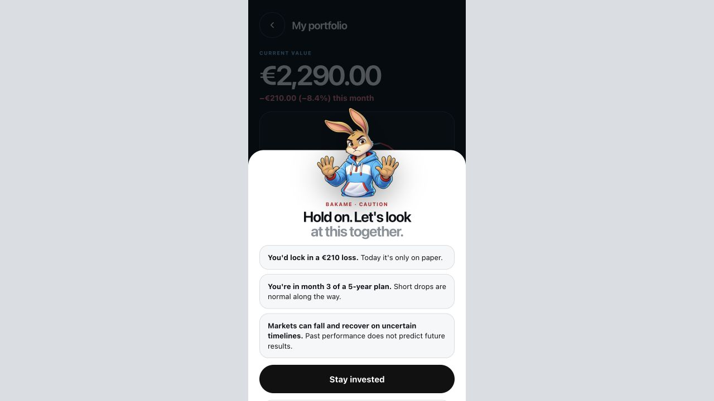

“I have an idea.”
But starting feels more complicated than it should.
Words like valuation, equity and dilution arrive before the founder has had a chance to learn what they mean in practice.
 Design a pilot
Design a pilot
For financial institutions
Education and simulation that helps banks turn curiosity into understanding—and helps new investors take their next step with confidence.

The problem
We learn how to earn money and save it. But not how to invest it, own part of a business or turn an idea into a company. Then, suddenly, we are expected to make important decisions.
People need somewhere to explore, ask simple questions and learn by doing—without risking real money or giving away part of their company.
Why it matters
When more people understand how investing works, household savings can support their long-term goals—and help finance the businesses and ideas Europe needs.
Each dot represents one euro. The blue dots show the share held in cash and deposits in Q2 2025.
Sources: European Commission, Savings and Investments Union; ECB, Financial Integration and Structure in the Euro Area 2026.
A more human journey
Instead of beginning with a product catalogue, begin with the question already in the customer’s mind.
Start with a familiar question, not a financial product.
Offer a safe, optional way to explore.
Let the learner change assumptions and see consequences.

Continue inside the institution when the learner feels ready.
The policy horizon
The Savings and Investments Union establishes the economic direction. The agreed Retail Investment Strategy raises expectations around value, transparency and investor protection.
Give citizens more opportunities to build wealth while increasing financing for European businesses, innovation and strategic priorities.
European Commission source ↗The politically agreed package strengthens cost transparency, value-for-money assessment, inducement safeguards and financial literacy provisions.
Council source ↗Izere is not presented as a compliance substitute. It provides an education and evidence layer that can sit upstream of institution-owned suitability, advice and execution.
What Izere adds
The product is the visual: short explanations, reversible decisions and a clear record of what the learner understood.
Bakame turns an unfamiliar concept into a question the learner recognises.
The learner changes an amount or time horizon and sees what the choice could mean.

A calm explanation creates room to think before acting.
A simple boundary
Education and simulation stay separate from suitability, advice and execution.
A focused first proof
Start with emerging investors and a controlled education-to-action pathway. Validate engagement and learning before scaling across products or channels.
Design the pilot